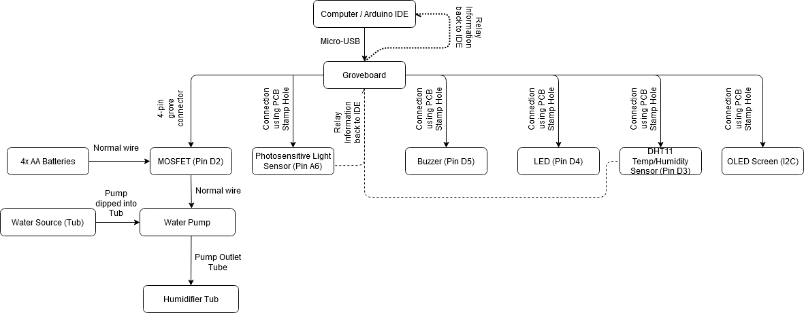
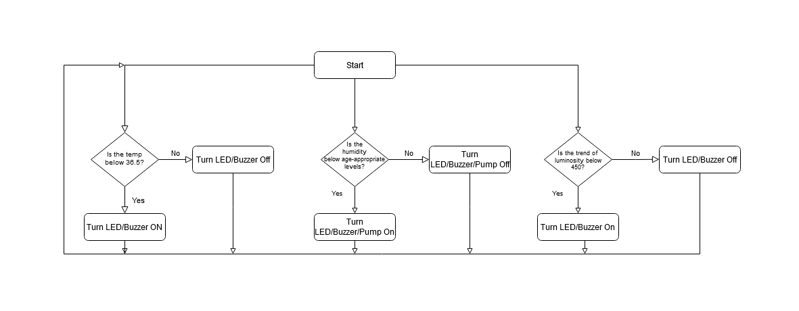

A deeper dive into sensing and programming.
A much more advanced Arduino project that incorporated more sensors and more advanced programming to attempt to solve a real world problem plauging rural areas of the world.
About the project
{kind=link}
One of the most important parts of a NICU is the incubator, an apparatus used to maintain environmental conditions suitable for a newborn baby. Used in preterm births or for some ill full-term babies. Usually an incubator includes multiple features, not limited to but consisting of: Blood pressure monitoring equipment, oxygen hood, and a ventilator. These three features are not included in this much simpler mockup of a Level I NICU.

{kind=link}
A fairly straightforward hardware-software diagram is attached to better understand the system here. The main components of the system are the photosensitive light sensor, the water pump, a DHT11 temperature and humidity sensor, a red warning LED, a buzzer, and an OLED screen.
{kind=link}
A operations flowchart here shows the operation of the system in diagram form. Notice that there are three branches from the start function, as each condition is checked independently, as opposed to in series. This is important, as there are multiple factors to keep in check in a NICU. An explanation of all the components is given below:
Starting with the temperature sensor, if the value falls below 23.0C, which is a fair compromise for the minimum temperature of 22.0C needed in a Level I NICU, The buzzer buzzes in a tone with a period of 0.5s. Simultaneously, the LED flashes with a period of 0.5s, alerting the user that the minimum temperature variable is being breached. On especially warm days, SIDS has a higher probability of occurring in the child. To prevent any chance of SIDS occurring, the LED and Buzzer turn on with a period of 0.5s when the temperature exceeds 25.0C. Heat can be provided using an incandescent light bulb, where a heater is not available, especially when the cold weather sets in.
Along the same lines, a Level I NICU requires a minimum relative humidity to be maintained, which varies with age. [5] The humidity value corresponding with the age can easily be changed by simply editing the age variable to suit the requirements. Unfortunately, a lot of hospitals in rural India lack proper Level 1 NICU facilities, including proper humidifying equipment. In such extreme cases, a simple way of humidifying the environment is by heating water in a container, thus increasing the relative humidity of the environment. A pump, which is connected to the Grove MOSFET, and 8V batteries, will begin pumping water from a reservoir into the tub close to the baby's environment. This water then can be heated two ways, by directly heating under a stove, or by using a lightbulb's heat energy to warm the water. Thus, if the humidity levels fall below acceptable limits, the pump will automatically pump water into the tub near the baby, which will then be heated to increase the relative humidity until it goes over the minimum threshold. Unfortunately, due to the project's constraints, a 230V bulb was independently connected, and not via a MOSFET/Arduino system, and so will need to be turned on manually. Likewise, a LPG stove was not used as it could become dangerous to test with flammable material around the test area.
The final piece of the puzzle is connected to the last one. A lot of times, babies will feel colder at night fast, especially when adequate warmth is not provided. The cold can very quickly lead to death, even quicker than the response times of some of the temperature and humidity sensors. During these times, a failure in the light bulb can be potentially fatal and catastrophic. To add a backup alert system, the photosensitive light sensor, which can detect the trend of the intensity of light, will trigger the LED flash and Buzzer, both with a period of 0.5s. This triggers if the luminosity trend falls below 450 units, but can be calibrated and adjusted according to the environment.